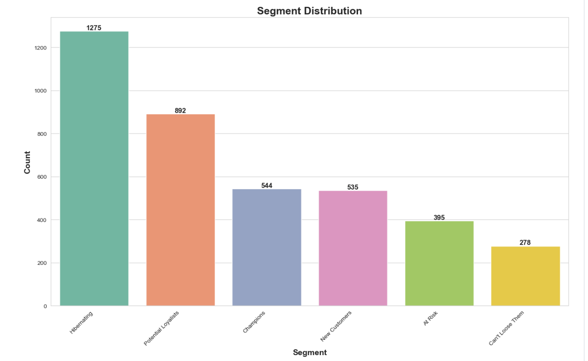
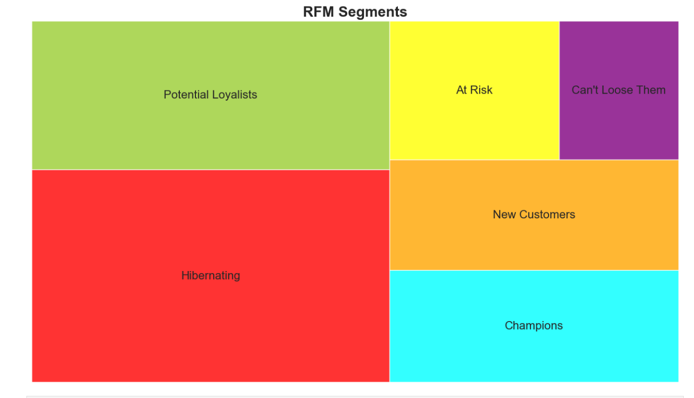
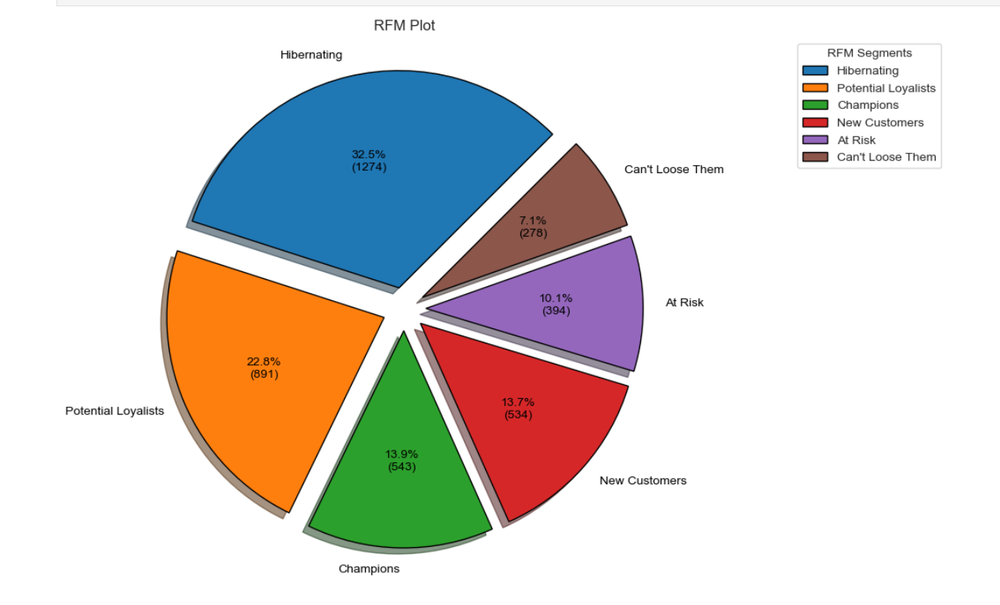
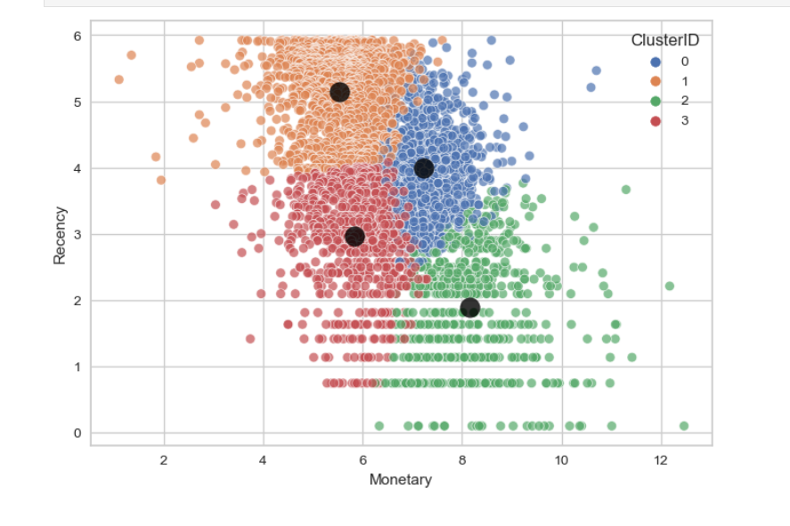

Customer Segmentation
Willkommen beim „RFM-Kundensegmentierungs- und Kohortenanalyseprojekt“.
Project Requirements
Dies ist ein transnationaler Datensatz, der alle Transaktionen enthält, die zwischen dem 01.12.2010 und dem 09.12.2011 für einen in Großbritannien ansässigen und registrierten Online-Einzelhändler ohne Ladengeschäft stattgefunden haben.
- Dies ist ein Projekt, bei dem Sie lernen werden, was RFM ist. Und wie man RFM-Analyse und Kundensegmentierung mit K-Means-Clustering anwendet.
- Außerdem verbessern Sie Ihre Fähigkeiten zur Datenbereinigung, Datenvisualisierung und explorativen Datenanalyse.
- Andererseits erstellen Sie Kohorten und führen Kohortenanalysen durch.
Skills Required
Python
pySpark
pandas
Matplotlib
numPy
Seaborn
RFM Analysis
Cohort Analysis
K-Means Clustering
Techniques
Major Tasks
- Datenbereinigung und explorative Datenanalyse: Importieren Sie Module, laden Sie Daten und überprüfen Sie die Daten. Führen Sie die folgenden Schritte aus. Behandeln Sie fehlende Werte, bereinigen Sie die Daten von Rauschen und fehlenden Werten
- RFM-Analyse: Aktualität berechnen, Häufigkeit berechnen, Geldwerte berechnen, RFM-Tabelle erstellen
- Kundensegmentierung mit RFM-Scores: RFM-Scoring berechnen, RFM-Segmentierungstabelle erstellen, RFM-Segmente plotten.
- Anwenden von K-Means-Clustering: Datenvorverarbeitung und Exploration, K-Means-Implementierung
- Kohorte erstellen und Kohortenanalyse durchführen: Future Engineering,Create 1st Cohort: User Number & Retention Rate,Create 2nd Cohort: Average Quantity Sold,Create 3rd Cohort: Average Sales
Abgeschlossen mit Jupyter Notebook.
Screenshots



